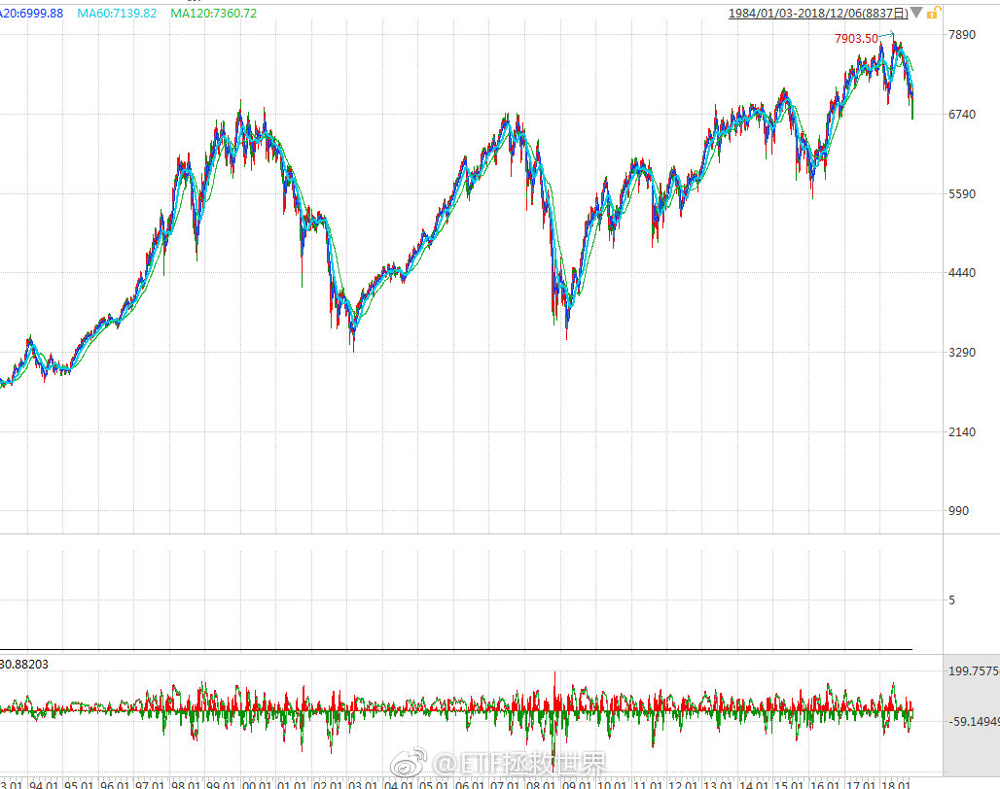
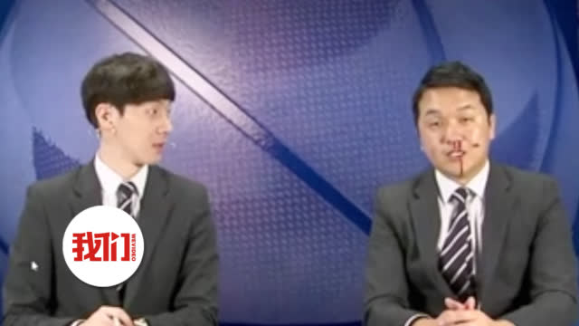

真看空一个东西，你就要大幅减仓。甚至加点有看空属性的品种。比如2015年上半年我看空，就把A股卖的7788再满仓分级A。3年多后的现在，终于在这几个月大买特买把A股买到了65%。这意思是没那么看空了。你不能嘴上说看空博眼球，你自己的根本不卖。这叫什么看空，这叫嘴炮。看空人民币的，你有没有把钱都想办法换成美元？至少换一半吧。看空房价的，你有没有卖掉你的房子，至少把除了自住的都卖了吧。您说是不是这个理儿？
回复@rapuzal2016:这么坚定啊。那这些看空的，还有你的房子卖了没？还是说一直看空根本就没买过？//@rapuzal2016:那现在步调一致地唱空房地产尤其是三四五六七八线地产的呢？我个人觉得挺对，呵呵@ETF拯救世界:做投资，有两点很关键：第一，大多数人都是错的。你看太多声调一致的东西，相信了，就会出错。这个世界人云亦云的人非常非常多。跟大多数人站在一起，赚不到钱。第二，最重要的是价格。一个利空或者利好都没那么重要。因为价格可能已经反映了这个利空或者利好。你赚钱还是赔钱，决定性因素是你买这个东西的价格。
回复@老高GG:我现在用oasis2，东西还不错，性价比一般。买个带背光的基础款足够了。我喜欢用kindle看书，一个是轻，一个是标注做记号方便。除了很经典的书，我一般不买纸质了。最主要占地方。毕竟我是豆瓣断舍离小组的。@ETF拯救世界:dax场内溢价接近5%，建议慎重购买
回复@求财不劫色:ETF不是LOF。ETF和场外连接基金是两个基金，净值当然不同了。//@求财不劫色:回复@哈哈大大地:咱们说的都是华安德国30，你说的是场外的，场外的一般跟的比较准，一个一个净值，我说的是场内的。代码是513030。为什么跟踪同一个指数，数值却不同，我也不清楚@ETF拯救世界:dax场内溢价接近5%，建议慎重购买
做投资，有两点很关键：第一，大多数人都是错的。你看太多声调一致的东西，相信了，就会出错。这个世界人云亦云的人非常非常多。跟大多数人站在一起，赚不到钱。第二，最重要的是价格。一个利空或者利好都没那么重要。因为价格可能已经反映了这个利空或者利好。你赚钱还是赔钱，决定性因素是你买这个东西的价格。
黑天鹅这个词我说各位是不是用的太滥了。。一致性，4+7……这都什么黑天鹅，都不是。一个行业发展过程中很正常的政策变动。黑天鹅是那种你根本意想不到，认为不可能发生的事情。这种政策变化可不是什么不可能的事，都在考虑范围内。我们组合中医药+养老有13%。养老成分中有40%是医药，加起来医药一共是10%仓位。我一直以来希望给到医药15%-20%。这5%-10%的空间，就是我预留给各种变动的。这点预先准备都做不好，就别来投资了。
回复@BreezeVivian:这不算黑天鹅。如果巨变，未来你会赚得更多。//@BreezeVivian:益达兄，类似集采政策这种医药行业的黑天鹅，会不会导致医药行业指数历史估值体系巨变？@ETF拯救世界:英国富时100，目前低于2000年点位。当然，这是不计股息的。计股息没那么惨。指数这么惨，你都不知道有多少成分股更惨。20年估计还有不少下跌的。这还是大英帝国最好的一批公司。但实际上，这二十年的低点算上来，涨了也有一倍。而且还是两次大波动。我要说的，是，所谓股票投资超长期坚定持有，是不靠谱的。一定是根据情况有买有卖。问题的关键当然是什么时候买，什么时候卖。这是需要进一步讨论的。但前提一定要明确，就是你的仓位要变化。高位仓位低，低位仓位高，千万别做反了。
回复@豪斯伪大叔:我个人认为英镑是在底部大区域了。 评论配图 //@豪斯伪大叔:但考虑到英镑汇率，用人民币看亏的不行吧@ETF拯救世界:英国富时100，目前低于2000年点位。当然，这是不计股息的。计股息没那么惨。指数这么惨，你都不知道有多少成分股更惨。20年估计还有不少下跌的。这还是大英帝国最好的一批公司。但实际上，这二十年的低点算上来，涨了也有一倍。而且还是两次大波动。我要说的，是，所谓股票投资超长期坚定持有，是不靠谱的。一定是根据情况有买有卖。问题的关键当然是什么时候买，什么时候卖。这是需要进一步讨论的。但前提一定要明确，就是你的仓位要变化。高位仓位低，低位仓位高，千万别做反了。
为什么我笑了。@新京报我们视频:【#镜头前流鼻血解说员回应#：平生第一次 没有被公司强制加班】韩国一名NBA解说员赛后突然流鼻血，搭档一脸惊慌本人淡定擦掉。该视频在网上引发讨论，网友担心该解说员的健康。对此他回应称，像这样流鼻血是平生第一次，没有健康问题，也没有被公司强制加班，谢谢大家关心。新京报我们视频的秒拍视频 @世面 89万次播放 00:41
英国富时100，目前低于2000年点位。当然，这是不计股息的。计股息没那么惨。指数这么惨，你都不知道有多少成分股更惨。20年估计还有不少下跌的。这还是大英帝国最好的一批公司。但实际上，这二十年的低点算上来，涨了也有一倍。而且还是两次大波动。我要说的，是，所谓股票投资超长期坚定持有，是不靠谱的。一定是根据情况有买有卖。问题的关键当然是什么时候买，什么时候卖。这是需要进一步讨论的。但前提一定要明确，就是你的仓位要变化。高位仓位低，低位仓位高，千万别做反了。